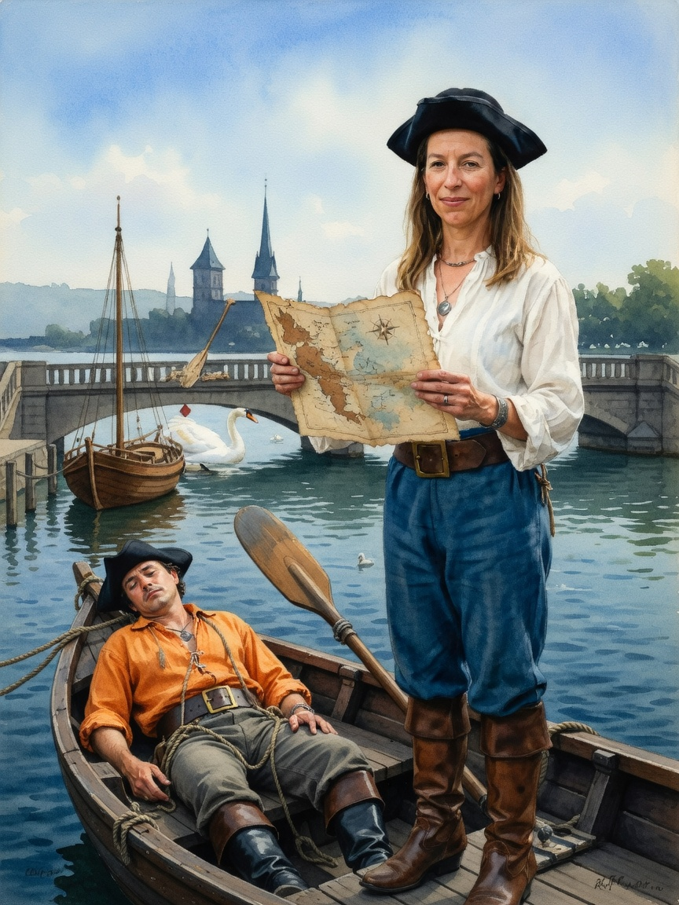
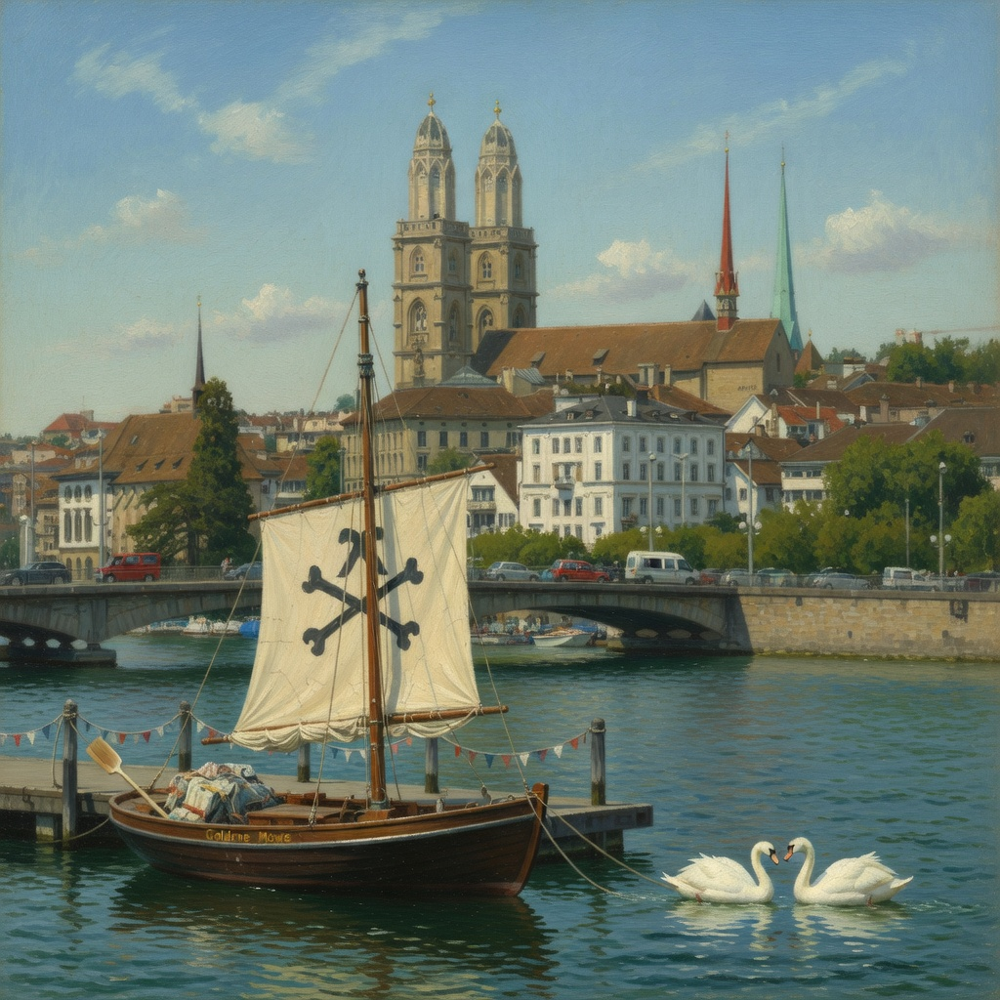
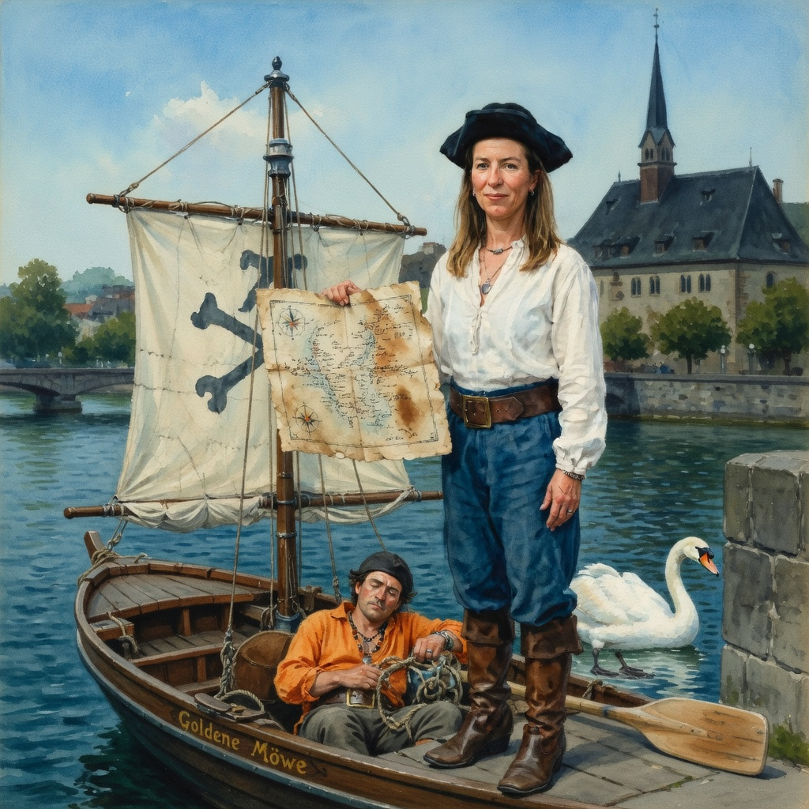

Plate NEW2: real Quaibrücke geometry + VB boat (mast + rigging; sail furled this run, bones not visible)

Page on plate NEW2: Facundo clearly ASLEEP in a boat with ropes + oar, landmark present — but the model split the vessel in two: masted boat in midground, characters in a mastless foreground dinghy; Fiona in the boat instead of on the bridge
THE PROOF — full production pipeline on staging (Lab #822 + #823)

Lab #822: plate via production builder with VEHICLES injection — correct vessel, real Quaibrücke + Grossmünster

Lab #823: full production page render on that plate — Facundo ASLEEP ON THE DECK of the correct boat, one vessel, no duplication